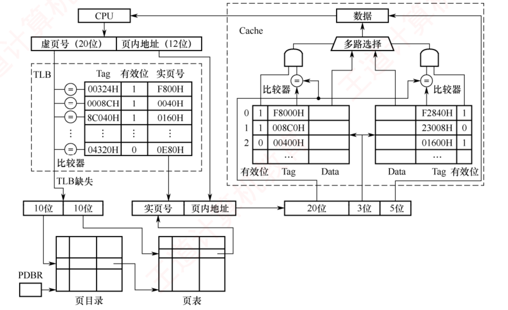

408
408先答旧题
4 KB 页、4 B 页表项，32 位地址的二级页表怎么切？
二级页表（无 TLB）一次访问要访存几次？
Cache 里的组号、标记怎么从块号算？
这是整个存储卷的汇合点。组原讲 Cache，操作系统讲页表，其实是同一次内存访问路上的两段。这一话把整条路走通，走通之后，所有这类分析都是这张图的子集。
其之壹一条路
CPU 发出的是虚拟地址，而 Cache 和主存认的是物理地址，所以先翻译，再访问。翻译靠页表，页表在主存里，为了不用每次跑一趟主存，再加一个专门缓存页表项的 TLB。于是：
地址一共切两次
第一次（虚拟地址）：VPN | 页内偏移。偏移位数 = log₂(页大小)。
第二次（物理地址）：标记 | 组号 | 块内。
TLB 全相联时，整个 VPN 就是 TLB 标记；组相联时，VPN 再切成 TLB 标记 | TLB 组号。
其之貳页表项和 TLB
页表项（PTE） 至少有：实页号、有效位（在不在内存）。请求分页还有访问位、修改位、外存地址等，下一话讲。页表放在主存，由操作系统维护，每个进程一张。
TLB（快表）是页表项的专用 Cache，用 SRAM 做的相联存储器，容量很小（几十到几千项）。因为一页有几千字节，程序在同一页内的访问非常多，所以 TLB 只有几十项也能有很高的命中率。这还是局部性。
TLB 每一项存：VPN（作标记）、PPN、有效位等。全相联时比较全部项；组相联时用 VPN 低位选组。
| TLB | Cache | 页表 | |
|---|---|---|---|
| 存什么 | 页表项（VPN→PPN） | 主存块 | VPN→PPN |
| 用什么做 | SRAM（相联） | SRAM | 主存 DRAM |
| 缺失谁处理 | 硬件（或 OS） | 硬件 | 缺页由 OS 处理 |
| 映射 | 全相联/组相联 | 三种都有 | — |
进程切换时，TLB 里存的是旧进程的映射，要清空（或者带上进程标识）。切换后最初的一段访问 TLB 全缺失，这是上下文切换的隐藏代价之一。
三个部件的合法组合
TLB 是页表的子集，Cache 是主存的子集。由此直接推出：
| TLB | 页表 | Cache | 可能吗 | 访存次数（一级页表，不含缺页处理） |
|---|---|---|---|---|
| 命中 | 命中 | 命中 | 可能 | 0 |
| 命中 | 命中 | 缺失 | 可能 | 1（取块） |
| 缺失 | 命中 | 命中 | 可能 | 1（页表） |
| 缺失 | 命中 | 缺失 | 可能 | 2（页表、取块） |
| 缺失 | 缺失 | 缺失 | 可能 | 缺页，处理后重来 |
| 命中 | 缺失 | 任意 | 不可能 | TLB 有的页一定在内存 |
| 任意 | 缺失 | 命中 | 不可能 | 不在内存的页不会在 Cache |
什么是「不可能」
TLB 命中，页表一定有效：页换出时操作系统会让 TLB 里对应的项失效。 页不在内存，Cache 里一定没有：页换出时 Cache 里的相关块也要作废。
合上页面说一遍：不看表，说出哪两种组合不可能，以及为什么。
TLB 命中但缺页：TLB 是页表的子集。缺页但 Cache 命中：Cache 是主存的子集。
其之參用真实数字走完全程
假设：虚拟地址 32 位，物理地址 28 位，页 4 KB。TLB 共 64 项，4 路组相联。Cache 32 KB，4 路组相联，块 64 B。
先定位数。
- 页内偏移 12 位，所以 VPN 20 位，PPN 28−12 = 16 位。
- TLB 64 ÷ 4 = 16 组，组号 4 位，TLB 标记 20−4 = 16 位。
- Cache 共 32 KB ÷ 64 B = 512 行，512 ÷ 4 = 128 组，组号 7 位，块内 6 位，标记 28−13 = 15 位。
再走地址。 虚拟地址 0x12345ABC。
- VPN = 0x12345，偏移 = 0xABC。
- TLB 组号 = VPN 低 4 位 = 0x5，TLB 标记 = 0x1234。在第 5 组比较 4 项。
- 假设 TLB 缺失。查页表，访存一次，读到有效位 1，PPN = 0x0A7C。填回 TLB。
- 物理地址 = 0x0A7C 拼 0xABC = 0x0A7CABC。
- 切物理地址：块内 = 低 6 位 = 60；组号 = 接下来 7 位 = 42；标记 = 0x53E。
- 到 Cache 第 42 组比较 4 个标记。假设缺失：从主存读一块放入第 42 组，返回数据。
这一趟访存 2 次：页表一次，取块一次。
再深一层：为什么页表项放不放进 Cache 也有讲究
页表项本身也是主存里的数据，所以访问页表时，它也可能在 Cache 里命中。书上通常为了简化，默认页表访问直接算一次主存访问，以题目说明为准。 另外注意上面第 5 步：Cache 组号和块内共 13 位，比页内偏移的 12 位多一位。多出来这一位来自 PPN，所以必须等翻译完才知道组号，不能提前查。如果组号和块内不超过页内偏移，就可以边翻译边查 Cache。
时间怎么算
设 TLB 用 Tt，主存一次 Tm，缺页处理 Tp，不考虑 Cache：
带 TLB 的访存时间
TLB 命中：Tt + Tm。
TLB 缺失，页在内存：Tt + Tm（页表）+ Tm（数据），有时题目还给更新 TLB 的时间。
缺页：Tt + Tm（页表）+ Tp + Tt + Tm（数据）。末尾再来一遍 TLB 和数据，是因为要重新执行这条指令，此时 TLB 已经有了。
代入 Tt = 10 ns，Tm = 100 ns，Tp = 1 ms。命中：110 ns。TLB 缺失：210 ns。缺页：10 + 100 + 1000000 + 10 + 100 = 1000220 ns。缺页比其他情况慢近一万倍，所以缺页率必须非常低。
合上页面说一遍：给定地址位数和 Cache 参数，默写出两次切分怎么算。
虚拟地址切 VPN | 偏移；物理地址切 标记 | 组号 | 块内；组号 = log₂(行数/路数)。两张草图都要画。
其之肆段式和段页式虚拟存储器
前面都是页式。段式虚拟存储器：按程序的逻辑段调入调出，段表记录段长、基址、是否在内存、是否修改等；虚拟地址 = 段号 + 段内偏移。段长不一，换入换出时会产生外部碎片。
段页式虚拟存储器：虚拟地址 = 段号 + 页号 + 偏移。先查段表得页表基址，再查页表得页框号。以页为单位调入。TLB 同样可以用在这里。
再深一层：反置页表
普通页表每个进程一张，按虚页号索引。反置页表整个系统只有一张，按物理页框索引，每项记录「这一页框里放的是哪个进程的哪一页」。表的大小只和物理内存有关，省空间，代价是查找要搜索，通常配散列加速。
领域展开
一条路：VA → TLB → 页表 → PA → Cache → 主存。
切两次：VPN | 偏移；标记 | 组号 | 块内。
不可能：TLB 命中而缺页；缺页而 Cache 命中。
缺页：处理完重新执行本条，TLB 和数据再来一遍。
其之伍实战
再深一层
① TLB ⊂ 页表 ⟹ TLB 命中 ⟹ Page 必然命中
（逆否：Page 缺失 ⟹ TLB 必然缺失）
② Cache ⊂ 主存 ⟹ Cache 命中 ⟹ 该页必然在主存 ⟹ Page 必然命中
（逆否：Page 缺失 ⟹ Cache 必然缺失）⟹ 只有两种组合不可能：TLB 命中 + Page 缺失、Page 缺失 + Cache 命中。选项 D 一次犯了这两条。⭐ 表 3.3：全部 5 种可能组合（必背，反着问也要能答）
| # | TLB | Page | Cache | 访存次数 |
|---|---|---|---|---|
| 1 | 命中 | 命中 | 命中 | 0 次（最快） |
| 2 | 命中 | 命中 | 缺失 | 1 次 |
| 3 | 缺失 | 命中 | 命中 | 1 次 |
| 4 | 缺失 | 命中 | 缺失 | 2 次 |
| 5 | 缺失 | 缺失 | 缺失 | 缺页，访磁盘 + ≥2 次访存 |
📌 顺带记"三种缺失由谁处理"（高频判断题）：
· Cache 缺失：硬件自动完成（快，几十个周期）；
· 缺页：操作系统的缺页异常处理程序（慢，毫秒级）；
· TLB 缺失：硬件或软件都可以（x86 用硬件，MIPS 用软件）。
| 有效位 | 标记 | 页框号 |
|---|---|---|
| 0 | FF180H | 0002H |
| 1 | 3FFF1H | 0035H |
| 0 | 02FF3H | 0351H |
| 1 | 03FFFH | 0153H |
再深一层
① 切地址：页大小 4KB = 2¹² ⟹ 页内偏移【12 位 = 3 个十六进制位】 03FF F180H └─ 虚页号 03FFFH ─┘└偏移 180H┘ ← 去掉低 3 位十六进制就是页号 ② 查 TLB（全相联 ⟹ 标记就是完整虚页号，逐项比） FF180H ✘（且有效位 0） 3FFF1H ✘（差一位！） 02FF3H ✘（且有效位 0） 03FFFH ✔ 有效位 = 1 ⟹ 命中，页框号 = 0153H ③ 拼接（低位原样照抄，只换高位） 物理地址 = 0153H ‖ 180H = 015 3180H ✔📌 心算技巧：页内偏移 12 位 = 恰好 3 个十六进制位。所以"去掉最低 3 位十六进制"就是虚页号，"保留最低 3 位"就是偏移，一眼可得，不必写二进制。（页大小 4KB 时这个技巧永远成立，而 4KB 是最常见的页大小。）
⚠️⚠️ 四个 TLB 项里有三个是陷阱：
| 项 | 陷阱在哪 |
|---|---|
| FF180H | 长得像虚拟地址的一部分（F180 在地址里出现过），但它是完整的页号，且有效位 = 0 |
| 3FFF1H | 与 03FFFH 只差一位——看快了就选成页框号 0035H（正是错项 B） |
| 02FF3H | 有效位 = 0，即使匹配也不能用 |
⚠️ 物理地址写成"015 3180H"是 7 位十六进制 = 28 位，与"主存 256MB = 2²⁸"吻合 ✔ 这是个很好的自检：算完看看物理地址位数对不对。
再深一层
指令 add xaddr, 3 要做三件事：
① 地址转换（虚 → 实）
最好情况：TLB 命中 ⟹ 访存 0 次
② 取数（读 x）
最好情况：Cache 命中 ⟹ 访存 0 次
③ 回写（把 x+3 写回）
⚠️ 直写法：Cache 和主存【必须同时写】
⟹ 访存【至少 1 次，躲不掉】
合计最少 = 0 + 0 + 1 = 1 次 ✔📌 本题的题眼是"Cache 使用直写方式"这七个字。若改成回写法，写操作只改 Cache（置脏位），换出时才写主存 ⟹ 最少访存次数就变成 0 次（选 A）。⟹ 一个词改变整道题的答案，读题时务必圈出写策略。📌 顺带注意题目没算"取指令"：严格说取指也要访存，但题目问的是"完成该指令功能"，且指令通常在指令 Cache 里命中。408 的口径是只算数据访问。
⚠️ "至少"与"最多"是一对常见问法，做法完全相反：
· 问"至少"：每一步都假设命中，只留下必然发生的访存；
· 问"最多"：每一步都假设缺失（TLB 缺失查页表 1 次 + 缺页读磁盘 + Cache 缺失 1 次 + 直写 1 次…）。
🔗 与 3.6-12（2010）的表 3.3 相通：那题的"组合 1（全命中）访存 0 次"正是本题 ① ② 两步的最乐观情形。
再深一层
时间线：
执行指令 add xaddr, 3
→ 取操作数时发现该页不在主存
→ 【这条指令还没做完就被打断了】
→ 触发缺页故障 → OS 把页调入主存 → 更新页表
→ 返回，【从头重新执行 add xaddr, 3】
→ 这次取数成功，指令完成📌 为什么不能执行下一条？因为这条指令的效果（把 x+3 写回去）根本还没产生。跳过它，程序结果就错了。⭐ 三类内部异常的返回点，是 ch5 的核心考点，在这里先记牢：
| 类型 | 典型 | 处理完返回到 |
|---|---|---|
| 故障 Fault | 缺页、除零（部分实现）、段错误 | 发生故障的那条指令（重新执行） |
| 自陷 Trap | 系统调用、断点 | 下一条指令 |
| 终止 Abort | 硬件校验错 | 不返回，程序终止 |
⚠️ A、B、C 三项都对，且书上的表述有个细节值得注意：书里既说"异常"又说"缺页中断"——408 里这两个词在缺页这件事上常混用，但严格分类时它是内部异常（故障），不是外部中断（3.6-09 正面考过）。做题时以"内部异常/故障"为准。
（1）虚拟地址共有几位，哪几位表示虚页号？物理地址共有几位，哪几位表示页框号？
（2）使用物理地址访问 Cache 时，物理地址应划分成哪几个字段？说明每个字段的位数及位置。
（3）虚拟地址 001C60H 所在的页面是否在主存中？若在，对应的物理地址是什么？访问该地址时是否 Cache 命中？说明理由。
（4）假定为该机配置一个 4 路组相联的 TLB，共可存放 8 个页表项，其当前内容如下表。则此时虚拟地址 024BACH 所在的页面是否在主存中？说明理由。📋 页表（虚页号 | 有效位 | 页框号）：0|1|06 1|1|04 2|1|15 3|1|02 4|0|— 5|1|2B 6|0|— 7|1|32
📋 Cache（行号 | 有效位 | 标记）：0|1|020 1|0|— 2|1|01D 3|1|105 4|1|064 5|1|14D 6|0|— 7|1|27A
📋 TLB（2 组 × 4 路，每路 有效位|标记|页框号）：组 0：0|—|— 1|001|15 0|—|— 1|012|1F； 组 1：1|013|2D 0|—|— 1|008|7E 0|—|—
（2）Cache 采用直接映射，物理地址划分为：主存字块标记 | Cache 字块标记 | 字块内地址。块大小 32B ⟹ 字块内地址占 5 位；Cache 共 8 行 ⟹ Cache 字块标记占 3 位；主存字块标记占 20 − 5 − 3 = 12 位。
（3）虚拟地址 001C60H 的前 12 位为虚页号 001H，查页表其有效位为 1，因此所在页面在主存中；页框号为 04H，与页内偏移 C60H 拼接得物理地址 04C60H。04C60H = 0000 0100 1100 0110 0000B，映射到 Cache 第 3 行（011B）；该行有效位 = 1，但标记 105H ≠ 04CH（物理地址高 12 位），因此未命中。
（4）TLB 为 4 路组相联、共 8 项 ⟹ 分为 2 组，因此虚页号中高 11 位为 TLB 标记、最低 1 位为 TLB 组号。虚拟地址 024BACH 的虚页号为 024H = 0000 0010 0100B，TLB 标记为 0000 0010 010B（012H），TLB 组号为 0，因此只能映射到 TLB 第 0 组。组 0 中存在有效位 = 1、标记 = 012H 的项，因此 TLB 命中，即虚拟地址 024BACH 所在的页面在主存中。
再深一层
【第 1 问：两套地址各切两段】
虚拟地址 24 位（16MB = 2²⁴） | 虚页号 12 位 | 页内地址 12 位 | （页 4KB = 2¹²） 物理地址 20 位（1MB = 2²⁰） | 页框号 8 位 | 页内地址 12 位 | ⚠️ 两者的【页内地址位数相同（都是 12）】——这就是"低位不变"【第 2 问：物理地址再按 Cache 切三段】
物理地址 20 位，直接映射：
| 主存字块标记 12 | Cache 行号 3 | 块内地址 5 |
（高位） （中间） （低位）
块 32B ⟹ 5 位；8 行 ⟹ 3 位；20 − 5 − 3 = 12 位📌 注意本题地址被切了两次：先按"页"切（虚→实），再按"Cache 块"切。两次划分的边界毫无关系，各切各的——这是虚存+Cache 题的思维基本功。【第 3 问：查页表 → 拼物理地址 → 查 Cache】
① 001C60H ⟹ 虚页号 001H、页内偏移 C60H
（24 位地址 = 6 个十六进制位，去掉低 3 位即为虚页号）
② 查页表 001H：有效位 = 1 ⟹ 在主存，页框号 = 04H
③ 物理地址 = 04H ‖ C60H = 04C60H （8 位 + 12 位 = 20 位 ✔）
④ 04C60H = 0000 0100 1100 0110 0000B
低 5 位 00000 → 块内地址
中 3 位 011 → Cache 行号 = 3
高 12 位 04CH → 主存字块标记
⑤ 查 Cache 第 3 行：有效位 = 1，但标记 = 105H ≠ 04CH
⟹ 【未命中】⚠️ 第 ⑤ 步必须两项都查：先看有效位，再比标记。本题有效位是 1（不是无效），是标记不匹配导致未命中——答题时要说清是哪一种原因。【第 4 问：虚页号再切一刀 —— 本题最有价值的一问】
TLB 8 项、4 路组相联 ⟹ 组数 = 8 ÷ 4 = 2 ⟹ TLB 组号只要【1 位】
虚页号 12 位 = | TLB 标记 11 位 | TLB 组号 1 位 |
024BACH ⟹ 虚页号 = 024H = 0000 0010 0100B
TLB 标记 = 前 11 位 = 0000 0010 010B = 012H
TLB 组号 = 最后 1 位 = 0 ⟹ 查第 0 组
第 0 组四路：(0,—) (1,001H) (0,—) (1,012H)
第 4 路：有效位 1、标记 012H ✔ 匹配 ⟹ TLB 命中
⟹ 该页在主存中⭐⭐ "虚页号还要再切成 TLB 标记 + TLB 组号"是本题最该带走的东西——TLB 就是一个以虚页号为地址的小 Cache，所以对虚页号做的事，和 Cache 对物理地址做的事一模一样。2021 综 07（8 组）、2024 选 19（8 组）考的是同一件事。📌 答题格式建议（本题按 15 分写）：(1)(2) 先写位数计算式再给结论，并画出字段划分图；(3) 三步分行写（查页表 → 拼地址 → 查 Cache），Cache 未命中的理由要写明"标记不符"而非"无效"；(4) 必须先算出"TLB 分 2 组 ⟹ 组号 1 位"，再说明标记与组号如何从虚页号取出——这是采分核心。
（1）图中字段 A~G 的位数各是多少？TLB 标记字段 B 中存放的是什么信息？
（2）将块号为 4099 的主存块装入 Cache 时，所映射的 Cache 组号是多少？对应的 H 字段内容是什么？
（3）是 Cache 缺失处理的时间开销大还是缺页处理的时间开销大？为什么？
（4）为什么 Cache 可以采用直写法，而修改页面内容时总是采用回写法？📋 图中字段含义：虚拟地址切分为 A（虚页号）与页内地址；TLB 项含 B（TLB 标记）与页框号；物理地址切分为 C（实页号）与 D（页内地址）；物理地址再按 Cache 切为 E（Cache 标记）| F（Cache 组号）| G（块内地址）；H 为某个 Cache 行中的标记字段内容。
（2）块号 4099 = 00 0001 0000 0000 0011B，所映射的 Cache 组号为 0 0000 0011B = 3，对应的 H 字段内容为 0 0000 1000B（即标记 = 4099 div 512 = 8）。
（3）Cache 缺失带来的开销小，而处理缺页的开销大。因为缺页处理需要访问磁盘，而 Cache 缺失只要访问主存。
（4）因为采用直写法时需要同时写快速存储器和慢速存储器，而写磁盘比写主存慢很多，所以在 Cache-主存层次 Cache 可以采用直写法，而在主存-外存（磁盘）层次，修改页面内容时总是采用回写法。
再深一层
【第 1 问：七个字段，分三批算】
▍第一批：按【页】切（页 8KB = 2¹³ ⟹ 页内偏移 13 位）
A（虚页号） = 32 − 13 = 19 位
D（页内地址）= 13 位 ← 虚实两侧完全相同
C（实页号） = 24 − 13 = 11 位
▍第二批：TLB 是全相联
B（TLB 标记）= 【完整虚页号】 = 19 位 = A
⟹ 全相联不切组号，标记就是整个虚页号
▍第三批：物理地址再按【Cache】切
G（块内地址）= log₂64B = 6 位
组数 = 数据区 ÷ (块大小 × 路数)
= 64KB ÷ (64B × 2) = 512
F（组号） = log₂512 = 9 位
E（Cache 标记）= 24 − 9 − 6 = 9 位
⟹ A=19, B=19, C=11, D=13, E=9, F=9, G=6📌 "B 中存放什么"这一小问是送分的，但要答准：存放虚页号，作用是标明"这个 TLB 项缓存的是哪个虚页的页表项"。因为是全相联，标记就是完整虚页号；若改成组相联，B 就要减去组号位数（对照 2011 综 04、2021 综 07）。【第 2 问：块号 → 组号 + 标记】
组号 = 块号 mod 组数 = 4099 mod 512 = 3 标记 H = 块号 div 组数 = 4099 div 512 = 8 = 0 0000 1000B（9 位） 校验：4099 = 8 × 512 + 3 ✔📌 "标记 = 块号 div 组数"这个式子值得单独记：因为物理地址 = 标记 ‖ 组号 ‖ 块内地址，而块号 = 标记 ‖ 组号（把块内地址去掉），所以对块号做 div/mod 组数，正好分离出标记和组号。⟹ 给块号求组号用 mod，求标记用 div，一对操作。
【第 3、4 问：两句话的论述，但都是采分点】
(3) 缺页开销 ≫ Cache 缺失开销
Cache 缺失 → 访问【主存】，几十~上百个时钟周期
缺页 → 访问【磁盘】，毫秒级，慢 10⁵ 倍
(4) 直写法要求"同时写快的和慢的"
Cache-主存层：慢的是主存，还写得起 ⟹ 直写法可行
主存-磁盘层：慢的是磁盘，每次写都写磁盘完全不可接受
⟹ 只能回写：改页面时置脏位，换出时才写回📌 (3) 和 (4) 其实是同一件事的因果两端：正因为访问磁盘代价极高（3），所以虚存只能用回写法（4）。答 (4) 时把 (3) 的理由再说一遍即可，阅卷要的就是"写磁盘远慢于写主存"这句。🔗 2024 真题（3.6-18）的 C 项考的正是这条结论，而 3.6.5 那张对照表的"写策略"一行就是本题的浓缩。
（1）主存物理地址占多少位？
（2）TLB 采用什么映射方式？TLB 是用 SRAM 还是用 DRAM 实现？
（3）Cache 采用什么映射方式？若 Cache 采用 LRU 算法和回写法，则 Cache 每行中除数据（Data）、标记和有效位外，还应有哪些附加位？Cache 总容量是多少？Cache 中有效位的作用是什么？
（4）若 CPU 给出的虚拟地址为 0008 C040H，则对应的物理地址是多少？是否在 Cache 中命中？说明理由。若 CPU 给出的虚拟地址为 0007 C260H，则该地址所在主存块映射到的 Cache 组号是多少？📋 图中信息：虚拟地址 = 虚页号 20 位 + 页内地址 12 位；物理地址 = 实页号 + 页内地址，并按 Cache 切为 20 位 | 3 位 | 5 位。
📋 TLB（Tag | 有效位 | 实页号）：00324H|1|F800H 0008CH|1|0040H 8C040H|1|0160H 04320H|0|0E80H
📋 Cache 为 2 路，每组两行（有效位 | Tag）：组 0：1|F8000H 与 1|F2840H；组 1：1|008C0H 与 0|23008H；组 2：0|00400H 与 1|01600H
（2）TLB 采用全相联映射，可把页表内容调入任意一个空 TLB 项中，TLB 中的每项都有一个比较器，没有映射规则，只要空闲就行。TLB 采用静态存储器（SRAM），读/写速度快，但成本高，多用于容量较小的高速缓存储器。
（3）图中每组有两行，因此采用 2 路组相联映射方式。因为是 2 路组相联并采用 LRU 算法，所以每行需要 1 位 LRU 位；因为采用回写法，所以每行有 1 位修改位（脏位）。28 位物理地址中标记字段占 20 位、组索引占 3 位、块内偏移占 5 位，因此 Cache 共有 23 = 8 组，每组 2 行，每行 25 = 32B。Cache 的总容量为 8×2×(20 + 1 + 1 + 1 + 32×8) = 4464b = 558B。Cache 中有效位用来指出所在 Cache 行中的信息是否有效。
（4）虚页号 0008CH 恰好在 TLB 表中，对应实页号 0040H（有效位为 1），虚拟地址的页内地址为 040H，因此物理地址是 0040040H。该物理地址中高 20 位 00400H 为标记，低 5 位 00000B 为块内偏移，中间 3 位 010B 为组号 2，因此与 Cache 第 2 组两行的标记同时比较：虽然有一行的标记与 00400H 相等，但其有效位为 0，另一行标记不相等，因此访问 Cache 不命中。因为物理地址的低 12 位与虚拟地址的低 12 位相同，即 0010 0110 0000B，其低 5 位为块内地址、接着 3 位 011B 为组号，因此 0007 C260H 所在主存块映射到 Cache 组号为 3。
再深一层
【第 1 问：28 位，两条路都能算】
路一：实页号 16 位 + 页内地址 12 位 = 28 位 路二：Cache 划分 20 + 3 + 5 = 28 位 两条路互相验证 ⟹ 物理地址 28 位 ✔【第 2 问：全相联 + SRAM】图中 TLB 每项都配一个比较器、且没有组号字段 ⟹ 全相联；TLB 要一拍出结果 ⟹ 必须 SRAM（呼应 2020 真题 3.6-16 的 D 项）。
【第 3 问：Cache 总容量 —— 本题最容易算错的一问】
结构：2 路组相联，8 组 × 2 行，每行 32B 每行的位数（五项，一项都不能漏）： 标记 20 位 有效位 1 位 LRU 位 1 位 ← 2 路 ⟹ log₂2 = 1 位 脏 位 1 位 ← 回写法 数据 32×8 = 256 位 ──────────── 合计 = 20 + 1 + 1 + 1 + 256 = 279 位 总容量 = 8 组 × 2 行 × 279 = 4464 bit = 558 B ✔⚠️⚠️ 括号里是三个 +1（有效位、LRU 位、脏位），不是两个。漏掉任意一个都会算出 4448b 或 4432b，与 4464b 差之毫厘。⟹ 做题时把五项竖着列出来逐项打勾，别横着一串写。（本题在读书阶段就因为漏看一个 +1 而一度误判为书误，dpi=400 复核后确认书是对的。）
【第 4 问 · 前半：查 TLB → 拼物理地址 → 查 Cache】
0008 C040H ⟹ 虚页号 0008CH、页内地址 040H （页 4KB ⟹ 去掉低 3 个十六进制位） 查 TLB：0008CH 命中（有效位 1）⟹ 实页号 0040H 物理地址 = 0040H ‖ 040H = 0040040H 按 Cache 切（20 | 3 | 5）： 低 5 位 = 00000 → 块内偏移 中 3 位 = 010 → 【组号 2】 高 20 位 = 00400H → 标记 查第 2 组两行： 行 a：标记 00400H 相等 ✔ 但【有效位 = 0】✘ 行 b：标记 01600H ≠ 00400H ✘ ⟹ 不命中⚠️ 这一问的陷阱做得非常精细：标记明明对上了，却因为有效位为 0 而不算命中。有效位为 0 意味着那一行装的是历史残留的垃圾，标记相同纯属巧合。⟹ 判命中的铁律：有效位 = 1 且标记相符，缺一不可。
【第 4 问 · 后半：VIPT —— 本题最该带走的技巧】
问 0007 C260H 映射到哪个 Cache 组？
注意：题目【没给】这个虚页号对应的页表项！
但仍然能答 —— 因为：
Cache 需要的位 = 组号(3) + 块内地址(5) = 8 位
页内偏移 = 12 位
8 ≤ 12 ⟹ 组号完全落在【页内偏移】之内
而页内偏移在虚实转换中【原样不变】
⟹ 直接从【虚拟地址】低位取组号即可！
0007 C260H 低 12 位 = 260H = 0010 0110 0000B
低 5 位 = 00000
接着 3 位 = 011 = 【组号 3】✔⭐⭐ 这就是真实 CPU 里的 VIPT（Virtually Indexed, Physically Tagged） Cache：用虚地址低位提前索引 Cache 组，与 TLB 地址转换并行进行，等物理地址出来时正好拿它比标记——把两步串行变成并行，省掉一整级延迟。📌 判据背下来：(Cache 组号位数 + 块内地址位数) ≤ 页内偏移位数，满足时组号可直接从虚拟地址取。2025 真题（综 09 第 1 问）问的就是"虚拟地址中哪些位可作为 Cache 索引"，是同一条。
📌 答题格式建议（本题按 15 分写）：(3) 的总容量必须把五项竖列并注明"因 2 路 LRU 故 1 位、因回写故 1 位脏位"；(4) 前半要写明"标记相符但有效位为 0，故不命中"；后半必须写出"因组号+块内地址共 8 位 ≤ 页内偏移 12 位，故可直接用虚拟地址低位定位"这句理由。
1）某虚拟地址对应的页目录号为 6，在相应的页表中对应的页号为 6，页内偏移量为 8，该虚拟地址的十六进制表示是什么？
2）寄存器 PDBR 用于保存当前进程的页目录始址，该地址是物理地址还是虚拟地址？进程切换时，PDBR 的内容是否会变化？说明理由。同一进程的线程切换时，PDBR 的内容是否会变化？说明理由。
3）为了支持改进型 CLOCK 算法，需要在页表项中设置哪些字段？

1）地址总长 32 位，高 20 位为虚页号、低 12 位为页内地址；虚页号高 10 位为页目录号、低 10 位为页号。展开：0000 0001 1000 0000 0110 0000 0000 1000B ⟹ 十六进制表示 0180 6008H。
2）PDBR 为页目录基址寄存器（Page-Directory Base Register），其存储页目录表物理内存基地址。
进程切换时 PDBR 的内容会变化——每个进程的地址空间、页目录和 PDBR 的内容存在一一对应的关系；进程切换时地址空间发生了变化，对应的页目录及其始址也相应变化，因此需要用进程切换后当前进程的页目录始址刷新 PDBR。
同一进程的线程切换时 PDBR 的内容不会变化——同一进程中的线程共享该进程的地址空间，其线程发生切换时地址空间不变、线程使用的页目录不变。
3）改进型 CLOCK 需要用到使用位和修改位 ⟹ 需要设置访问字段（使用位）和修改字段（脏位）。
再深一层
💭 思路（动手前看）
- 第 1 问是「反着拼」，注意先拼成 32 位二进制再转十六进制。
页目录号 6 ⟹ 10 位：00 0000 0110 页号 6 ⟹ 10 位：00 0000 0110 页内偏移 8 ⟹ 12 位：0000 0000 1000 拼成 32 位（每 4 位一组重新分组）： 0000000110 0000000110 000000001000 = 0000 0001 1000 0000 0110 0000 0000 1000B = 0 1 8 0 6 0 0 8 = 0180 6008H
⚠️ 10 位不是 4 的倍数 ⟹ 不能分段转十六进制（若把 6 写成 006H 直接拼会得到错误答案）。必须先拼成完整的 32 位二进制串，再从低位起每 4 位一组转。提速：直接用移位 (6 << 22) | (6 << 12) | 8 6 << 22 = 0x01800000 6 << 12 = 0x00006000 8 = 0x00000008 按位或 ⟹ 0x01806008
- 第 2 问的三小问各有一条独立的理由，不能混着写。
① PDBR 存物理地址还是虚拟地址？ ⟹ 物理地址 理由：页目录本身是用来翻译虚拟地址的， 若它的始址也是虚拟地址，就得先翻译这个地址 ⟹ 无穷递归，地址变换无法启动 ② 进程切换时 PDBR 变吗？ ⟹ 会变 理由：每个进程有自己独立的虚拟地址空间和页目录 ⟹ 切换进程 = 换一套地址映射 = 换一张页目录 ⟹ 必须用新进程的页目录始址刷新 PDBR ③ 线程切换时 PDBR 变吗？ ⟹ 不会变 理由：同一进程的线程共享该进程的地址空间 ⟹ 用的是同一张页目录 ⟹ PDBR 不必改
⭐ 第 ③ 点正是「线程切换比进程切换开销小」的一个具体证据：不换页表 ⟹ 不必刷新 TLB ⟹ 省下大量的 TLB 未命中。 - 第 3 问是白送分，但要把两个字段的名字和用途都写出来。改进型 CLOCK 按 (A, M) 分四类 ⟹ 需要访问位 A（使用位）与修改位 M（脏位）。
解：
(1) 该虚拟地址的十六进制表示 ⛳4 分
由图可知虚拟地址共 32 位：
高 20 位为虚页号（其中高 10 位为页目录号，低 10 位为页号），
低 12 位为页内地址。
页目录号 6 ⟹ 00 0000 0110B
页号 6 ⟹ 00 0000 0110B
页内偏移 8 ⟹ 0000 0000 1000B
拼接得 0000 0001 1000 0000 0110 0000 0000 1000B
⟹ 该虚拟地址为 0180 6008H
(2) PDBR 的性质与切换时的变化 ⛳6 分
① PDBR 中保存的是页目录表的物理内存基地址（物理地址）。
因为页目录本身用于将虚拟地址翻译为物理地址，
若其始址为虚拟地址，则需先对该地址进行翻译，
将导致无穷递归，地址变换无法完成。
② 进程切换时，PDBR 的内容会变化。
每个进程的地址空间、页目录与 PDBR 的内容一一对应；
进程切换时地址空间发生变化，对应的页目录及其始址
也随之变化，需用切换后当前进程的页目录始址刷新 PDBR。
③ 同一进程的线程切换时，PDBR 的内容不会变化。
同一进程中的各线程共享该进程的地址空间，
线程切换时地址空间不变，所用的页目录也不变。
(3) 支持改进型 CLOCK 算法所需的页表项字段 ⛳3 分
改进型 CLOCK 算法依据 (访问位, 修改位) 的取值
将页面分为四类并按 (0,0) → (0,1) → (1,0) → (1,1) 的次序淘汰，
⟹ 需要在页表项中设置「访问字段（使用位 A）」
和「修改字段（脏位 M）」。📌 批注（对照完校对）⭐⭐ 这张图是全章最复杂的一张，但它其实把 408 三门课的内容画在了一起：
CPU → 虚页号(20) | 页内地址(12) ← OS：地址结构 ↓ TLB（Tag / 有效位 / 实页号 + 比较器） ← 组原 + OS ↓ TLB 缺失 10 位 | 10 位 + PDBR → 页目录 → 页表 ← OS：二级页表 ↓ 实页号 | 页内地址 → 20 位 | 3 位 | 5 位 ← 组原：Cache 位域 ↓ Cache（两路组相联 + 比较器 + 多路选择） ← 组原 ch3 ↓ 数据 → CPU🔵 ⟹ 一次访存要经过 TLB → 页表 → Cache → 主存 四级，这就是 3.2.9「地址翻译示例」那一小节讲的完整链路，也是全书最强的跨科枢纽（OS 的页表 + 组原的 Cache）。
⚠️ 扣分点第 (1) 问把 6 直接写成十六进制的 6 去拼，得到 0060 0608H 之类的错误答案。页目录号占 10 位，不是 8 位也不是 12 位 ⟹ 必须先在二进制层面拼够 32 位，再整体转十六进制。与本节 2010 真题（综 16）「页号 6 位不能用十六进制切」是同一类坑。
⚠️ 扣分点第 (2) 问答对结论但理由写成「因为规定如此」。三个小问各要一条实质理由：无穷递归 · 每进程一张页目录 · 线程共享地址空间。
⭐ 第 ③ 点可以再往前推一步（写进卷面是加分项）：进程切换要换 PDBR ⟹ 整个 TLB 里的映射都作废 ⟹ 必须刷新（flush）TLB ⟹ 切换后的一段时间内 TLB 命中率极低。这就是「进程切换开销远大于线程切换」的硬件层面原因（现代 CPU 用 ASID/PCID 标记来缓解）。⟹ 与 OS ch2 讲的「线程切换不涉及地址空间切换，开销小」完全对上。
做完再翻：这些题到底在问什么
这些大题的骨架完全一样：第一问问某地址字段几位，第二问 TLB 映射与实现，第三问走一个地址，第四问 Cache 里的块或容量。
动手习惯：先把两张地址划分表写在草稿上，所有的问都从那两张表里读。
「至少访存几次」这种问法，把能命中的都假设命中，只数绕不开的（全写必须写主存）。
同一张图，组原问 TLB 和 Cache，操作系统问页目录和页号，所以不用分科准备。